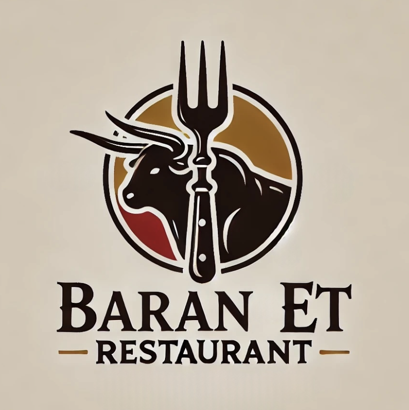

Baran Et Restaurant
Ana Sayfa
Menü
Kampanyalar
Rezervasyon
İletişim
Profil
Giriş Yap
Çıkış Yap
Sepet
Rezervasyon Yapın
Saat Seçin
10:00
10:15
10:30
10:45
11:00
11:15
11:30
11:45
12:00
12:15
12:30
12:45
13:00
13:15
13:30
13:45
14:00
14:15
14:30
14:45
15:00
15:15
15:30
15:45
16:00
16:15
16:30
16:45
17:00
17:15
17:30
17:45
18:00
18:15
18:30
18:45
19:00
19:15
19:30
19:45
20:00
20:15
20:30
20:45
21:00
21:15
21:30
21:45
22:00
Rezervasyon Yap
Rezervasyonunuz alınmıştır! Ana sayfaya yönlendiriliyorsunuz...